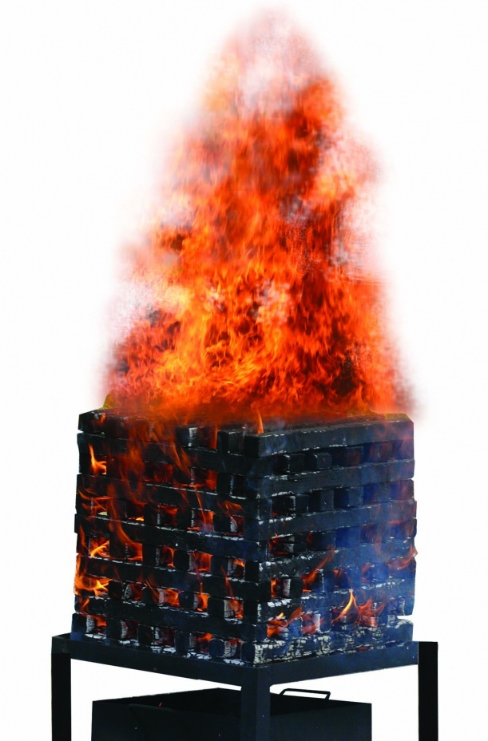

Ранги огнетушителей
Если вы собираетесь приобрести огнетушитель, то Вам следует знать, что его наиболее важной характеристикой является огнетушащая способность. Она определяет способность огнетушителя потушить модельный очаг пожара. Классы пожаров, для тушения которых предназначен выбранный огнетушитель, обязательно должны быть указаны на его этикетке. Огнетушащая способность определяется рангом огнетушителя — 2А, 3А, 4А, 55В, 144В, где буквенный символ (А,В) это класс пожара, и цифра означает величину (ранг) пожара. Чем выше цифра перед буквенным символом – тем больше ранг. Это и есть главный показатель качества огнетушителя. Эти значения и называют рангом огнетушителя. Чем больше ранг огнетушителя, тем больше площадь горящей поверхности, который данный огнетушитель способен потушить и тем лучше для потребителя.
На несложном примере попытаемся прояснить различия между значениями рангов огнетушителя 2А, 3А и 4А. На рисунке показан пример модельного очага пожара класса А. Очаг класса пожара А представляет из себя штабель из определенного количества брусков. Сечение брусков во всех очагах (2А, 3А, 4А) одинаковое (40*40 мм), а вот их длина и количество различны. Самое маленькое количество брусков и длина – у очага 2А -112 шт, длина бруска 635мм, самое большое – у очага 4А- 180шт, длина – 800мм. Соответственно различается и расчетная площадь горящей поверхности брусков в штабеле: у очага 2А – это 9 кв.метров, 3А – это 14 кв.метров, 4 А – это 19 кв.метров. Таким образом, огнетушитель с рангом 4А способен потушить в 2 раза больший очаг по классу А, чем огнетушитель с рангом 2А.
Очень важно, чтобы огнетушитель был предназначен для тушения пожаров по классу А, т.е. для тушения твердых горючих веществ (дерево, бетон, металл, кирпич, пластик, бумага, ткань, кожа, электроника и многое другое), потому что эти материалы (на 99%) с точки зрения пожарной опасности и есть то, что нас окружает.
Модельный очаг В – это жидкие горючие вещества. Например, модельный очаг пожара 55В представляет собой противень с 18л воды и 37л бензина, в результате получается 55л горючей жидкости. А значение ранга 144В – это уже 144л горючего вещества. Таким образом, для класса В цифра перед буквой – это количество литров горящей жидкости, которую способен потушить огнетушитель.